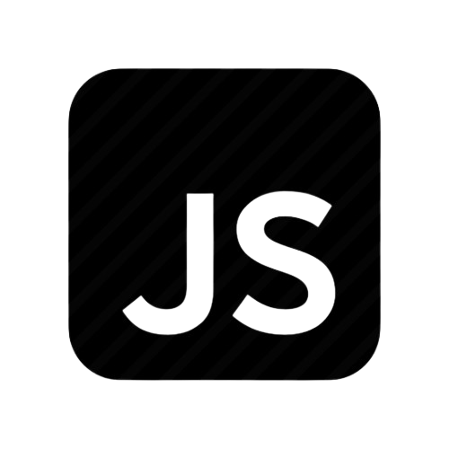
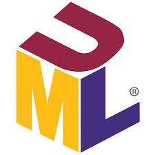

Mes Compétences
Développement
CodeIgniter
Python
Java (POO)

JS / HTML / CSS
Bases de Données & XML
MySQL / SQL
XML / JSON

Modélisation Merise & UML (StarUML)
Systèmes & Outils
Windows
macOS
Git / GitHub
VS Code
Conception d'applications logicielles & Développement de solutions métiers
Consulter mes travauxÉtudiante en 2ème année de BTS SIO, je me spécialise dans la création de solutions logicielles. Mon approche combine rigueur technique et curiosité pour les nouvelles technologies.
Création de site internet et optimisation de la visibilité numérique.
Voir le projetConception d'un site vitrine complet pour services à la personne.
Voir le projet

Refonte de l'écosystème numérique et optimisation SEO.
Mise en place d'un catalogue dynamique sous architecture MVC.
Focus sur la qualité logicielle et l'intégration de tests unitaires.
Développement d'une solution MVC de gestion sociale (Génération PDF).
Conception responsive et optimisation SEO pour site vitrine.
Gestion d'utilisateurs via interface graphique interactive (POO).
Développement e-commerce complet : inscriptions, panier, SQL.
Comment l'innovation technologique permet-elle de lever les barrières du handicap dans le monde digital ?
Pour cette veille, j'utilise une stratégie de collecte automatisée :
Rendre les services digitaux utilisables par tous, indépendamment des capacités physiques ou mentales.
Conformité à la loi du 11 février 2005 et respect des normes internationales WCAG.
L'accessibilité ne profite pas qu'aux handicapés : elle améliore l'UX pour tous (ex: sous-titres).
L'intelligence artificielle devient le moteur principal de l'autonomie numérique.
Flux d'actualités et analyses ↓
Décryptage détaillé des dernières innovations et de leur impact sur le développement d'applications accessibles.